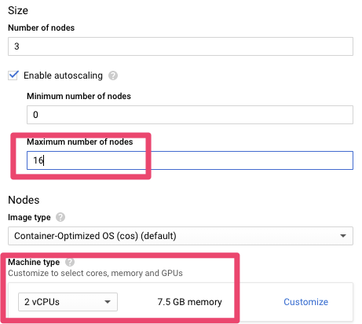

Confluent Kafka Kubernetes Operator — Setup and Playing!
Posted

Confluent Kafka Kubernetes Operator — Setup and Playing!
Confluent released their Kafka Kubernetes Operator this week (as part of their CP 5.3 release). The TL;DR summary is this gives you a straight forward way to deploy your own clustered & secured Apache Kafka on Kubernetes (ZooKeeper, Apache Kafka) along with the cool bits (Kafka Connect, KSQL, Schema Registry, REST Proxy, Control Center).
This is pretty cool as it opens the way for Kafka deployments to on premises (eg., OpenShift or Rancher) and eases the way for clouds deploys (EKS, AKS, GKE). It also automates security configuration setup (setting up kerberos authentication in Kafka is a job for the patient!).
So, let’s see how to see this up.
Machine Setup
I recently got a new Mac — so this was a good opportunity to document the steps necessary to start from a clean machine. This demonstration uses the Google (GCP) Kubernetes Engine
Kubernetes Helm CLI
First — let’s install the kubernetes command line tools (assuming *brew* is already installed)
brew install kubernetes-helmbrew
install kubernetes-cli
Google Cloud SDK
I’ll be using the Google (GCP) Kubernetes Engine. You’ll need to install the google-cloud-sdk . Google has great quick-start instructions . In short, download, extract and add to your PATH
Confluent Kubernetes Operator Helm bundle
Next, we actually need to download the Confluent Helm bundle. This Confluent bundle comprises Helm charts, templates, and scripts used to deploy Confluent Operator and Confluent Platform components for your Kubernetes cluster. Remember this is an Enterprise feature (ie., paid for if used in production).
Download and extract the bundle from Confluent Platform Operations from https://docs.confluent.io/current/installation/operator/co-deployment.html
tar xvfz confluent-operator-20190726-v0.65.0.tar.gz
cd confluent-operator-20190726-v0.65.0/helm
GCP Kubernetes Engine Provision
Adding a Kubernetes clusters
Navigating to GCP Kubernetes Engine ; click “create cluster”
Adding a Kubernetes clusters
Add a node pool
For the new cluster; add a lot of capacity. I found 16 nodes of 2 vCPU’s was enough to get going
Add a node pool
Adding resource quota
Initially I hit a problem where I could not provision enough resource due to a quota on CPUs.
 Be sure to increase the CPU quota
Be sure to increase the CPU quota
If this happens to you navigate to IAM Admin Quotas (https://console.cloud.google.com/iam-admin/quotas) and increase to something like 32 for the Compute Engine API CPUs maximum
 Update quota
Update quota
Setup GCP Client
Now you’ll need to initialises and authenticate your setup
gcloud init
gcloud auth list
gcloud config set compute/region us-central1
gcloud config set compute/zone us-central1-a
gcloud container clusters get-credentials my-kafka-cluster
Next, setup a Service Account
kubectl create serviceaccount tiller -n kube-system
kubectl create clusterrolebinding tiller --clusterrole=cluster-admin --serviceaccount kube-system:tiller
helm init --service-account tiller
Install Confluent Operator
Good — now my laptop can communicate with a remote GCP Kubernetes Engine. Now to install the Confluent Operator. These steps are pretty much verbatim from https://docs.confluent.io/current/installation/operator/co-deployment.html
helm install -f ./providers/gcp.yaml --name operator --namespace operator --set operator.enabled=true ./confluent-operator
kubectl -n operator patch serviceaccount default -p '{"imagePullSecrets": [{"name": "confluent-docker-registry" }]}'
kubectl get pods -n operator | grep "manager"
Install ZooKeeper
First — let’s install 3 zookeeper nodes
helm install -f ./providers/gcp.yaml --name zookeeper --namespace operator --set zookeeper.enabled=true ./confluent-operator
kubectl get zookeeper zookeeper -ojsonpath='{.status.phase}' -n operator
Setup DNS (Optional)
Not strictly necessary — but if you want to have direct (external) access to your Kafka cluster, you’ll need to provide an accessible DNS that can be pushed into your LISTENER config. The settings are in helm/providers/gcp.yaml
![Changes to helm/providers/gcp.yaml](00000004.yaml*
Install Kafka brokers
A very similar approach to setting up 3 kafka brokers
helm install -f ./providers/gcp.yaml --name kafka --namespace operator --set kafka.enabled=true ./confluent-operator
kubectl get pods -n operator | grep kafka
Install Schema Registry
Now to install a 2 node schema registry
helm install -f ./providers/gcp.yaml --name schemaregistry --namespace operator --set schemaregistry.enabled=true ./confluent-operator
kubectl get pods -n operator | grep schemaregistry
Install Kafka Connect
Now for Kafka connect
helm install -f ./providers/gcp.yaml --name connect --namespace operator --set connect.enabled=true ./confluent-operator
kubectl get pods -n operator | grep connectors
Install Confluent Control Center
helm install -f ./providers/gcp.yaml --name controlcenter --namespace operator --set controlcenter.enabled=true ./confluent-operator
kubectl get pods -n operator | grep controlcenter
Install Confluent KSQL
helm install -f ./providers/gcp.yaml --name ksql --namespace operator --set ksql.enabled=true ./confluent-operator
kubectl get pods -n operator | grep ksql
Running Workload
After the deployments have completed, the running workloads should look like this
Kubernetes Workloads on GCP
Does it work — let’s test it …
Test Kafka from within the cluster
Launch a bash session on a kafka broker
kubectl -n operator exec -it kafka-0 bash
Create a local kafka.properties file
cat << EOF > kafka.properties
bootstrap.servers=kafka:9071
sasl.jaas.config=org.apache.kafka.common.security.plain.PlainLoginModule required username="test" password="test123";
sasl.mechanism=PLAIN
security.protocol=SASL_PLAINTEXT
EOF
And then run a test
kafka-topics --command-config kafka.properties --bootstrap-server kafka:9092 --list
exit
Test local KSQL client against remote KSQL server
Establish a port mapping tunnel
kubectl port-forward svc/ksql 8088:8088 -n operator
And start a ksql session (locally) connecting to a remote server
ksql
list topics;
exit
Test Confluent Control Center
Now let’s test access to Confluent Control Center. Establish a port mapping tunnel for port 9021
kubectl port-forward svc/controlcenter 9021:9021 -n operator
And navigate to http://localhost:9021
The initial login is admin and the default password is Developer1.
 Behold — Confluent Control Center
Behold — Confluent Control Center
Teardown and Cleanup
Be sure to remove the deployment once you’ve finished testing. For GCP Kubernetes Engine it’s pretty much down to deleting the cluster
 Things not to do to production
Things not to do to production
Final Thoughts
A managed service anything is preferable to rolling things yourself. However, the Kafka Kubernetes Operator made a complex deployment pretty seem-less. This is pretty battle tested too as Confluent run their own public cloud offering (Confluent Cloud) on Kubernetes.
I had a fully clustered, secured and highly available streaming platform of my own with a few yaml files and some cli magic.
This is an amazing outcome — built in minutes (not days or weeks). This was so much easier than the last time I did this!